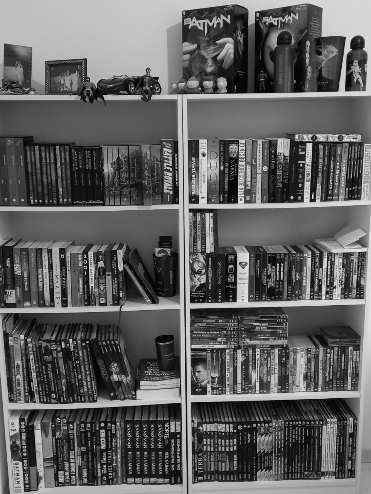

O que é o codinome Geek?
O codinome geek surgiu na metade de 2020, no auge da pandemia.
Criado por Lucas, um amante do mundo nerd, que tinha a vontade de compartilhar suas paixões com as pessoas e influenciá-las a lerem e verem seus livros e séries favoritos, o CG começou como um hobbie e logo se tornou uma paixão.
Meses depois surgiu o Codinome Geek Podcast, um local onde falo sobre filmes, HQ's, Livros, Séries e Jogos de uma maneira mais direta e informal com convidados super especiais.
